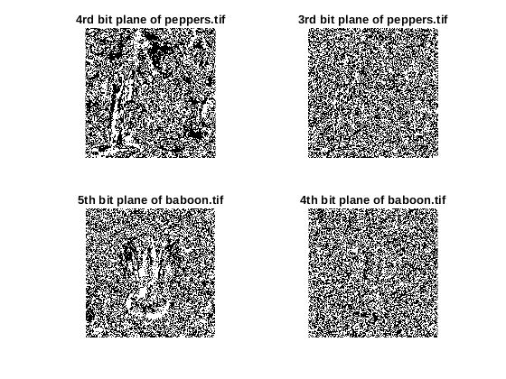
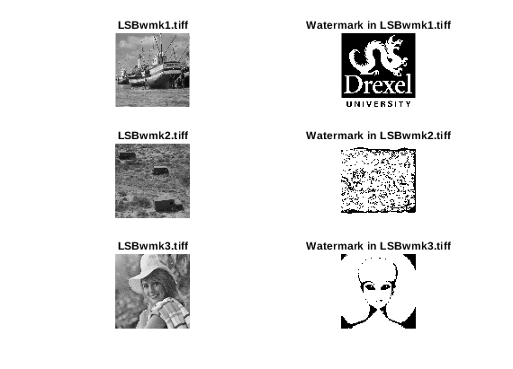
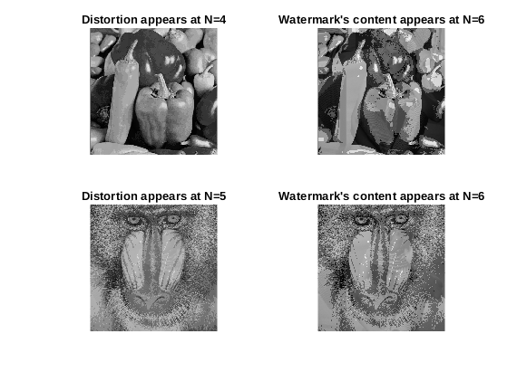
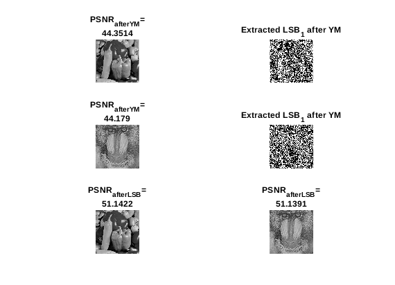
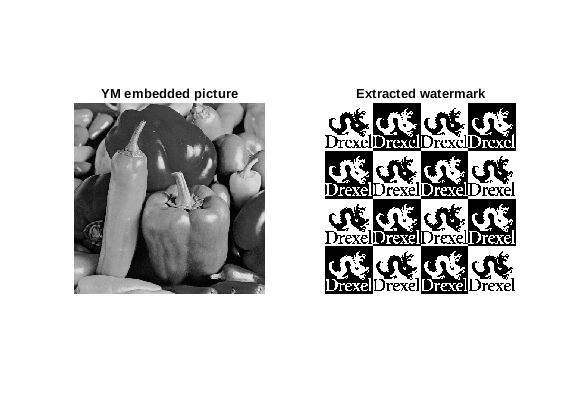
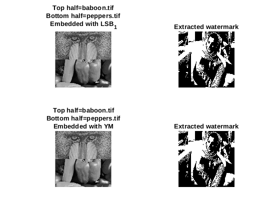

Contents
Tai Duc Nguyen, Hieu Mai - ECECS 435 - 02/20/2020
close all; clear all;
Part 1.1: LSB
Question: What is the highest bit plane for each image that no longer resembles image content and instead appears to be noise? Are these bit planes the same or different for these two images? If they are different, why would this be the case? Answer: For peppers.tif, the 4th bit plane shows clearly the outline of the peppers. For baboon.tif, however, on the 5th bit plane can the face of the baboon be clearly seen. These 2 numbers are different because baboon.tif has a lot more rapid change in pixel intensity than peppers.tif. In particular, the hair on the face of the baboon can't be seen at the 4th bit plane but the shape of the nose can be.
peppers_org = imread('peppers.tif'); baboon_org = imread('baboon.tif'); figure(1) subplot(2,2,1); peppers_bitplane = ExtractBitPlane(peppers_org, 4); imshow(peppers_bitplane, [0 1]); title("4rd bit plane of peppers.tif"); subplot(2,2,2); peppers_bitplane = ExtractBitPlane(peppers_org, 3); imshow(peppers_bitplane, [0 1]); title("3rd bit plane of peppers.tif"); subplot(2,2,3); baboon_bitplane = ExtractBitPlane(baboon_org, 5); imshow(baboon_bitplane, [0 1]); title("5th bit plane of baboon.tif"); subplot(2,2,4); baboon_bitplane = ExtractBitPlane(baboon_org, 4); imshow(baboon_bitplane, [0 1]); title("4th bit plane of baboon.tif");
Part 1.2: LSB watermark
LSBwmk1 = imread("LSBwmk1.tiff"); LSBwmk2 = imread("LSBwmk2.tiff"); LSBwmk3 = imread("LSBwmk3.tiff"); figure(2) subplot(3,2,1) imshow(LSBwmk1); title("LSBwmk1.tiff"); subplot(3,2,2) LSBwmk1_bitplane = ExtractBitPlane(LSBwmk1, 2); imshow(LSBwmk1_bitplane, [0 1]); title("Watermark in LSBwmk1.tiff"); subplot(3,2,3) imshow(LSBwmk2); title("LSBwmk2.tiff"); subplot(3,2,4) LSBwmk2_bitplane = ExtractBitPlane(LSBwmk2, 1); imshow(LSBwmk2_bitplane, [0 1]); title("Watermark in LSBwmk2.tiff"); subplot(3,2,5) imshow(LSBwmk3); title("LSBwmk3.tiff"); subplot(3,2,6) LSBwmk3_bitplane = ExtractBitPlane(LSBwmk3, 1); imshow(LSBwmk3_bitplane, [0 1]); title("Watermark in LSBwmk3.tiff");
Part 1.3: Embed Watermark
Question: How many bit planes of Barbara.bmp can you embed in each image before you start to notice distortion in the host image? How many bit planes of Barbara.bmp can you embed in each image before you can begin to see the hidden content? Are the number of bit planes that you can embed the same or different for each image? If they are different, why would this be the case? Answer: For peppers.tif, we can embed at most 3 bit planes before major distortion starts to appear. However, for baboon.tif, we can embed at most 4 bit planes. This number is different for the 2 images is due to the characteristic of each image: in particular, baboon.tif has a lot more rapid change in pixel intensity, which reduces the artifacts caused by Barbara.bmp. Nonetheless, both images will start to show the content of Barbara.bmp at 6 bit planes. This is the same for the 2 images because at N=6, too much contents have been replaced and major artifacts appear.
barbara_org = imread("Barbara.bmp"); figure(3) subplot(2,2,1) emb = LSBEmbedWatermark(peppers_org, barbara_org, 4); imshow(emb); title("Distortion appears at N=4"); subplot(2,2,2) emb = LSBEmbedWatermark(peppers_org, barbara_org, 6); imshow(emb); title("Watermark's content appears at N=6"); subplot(2,2,3) emb = LSBEmbedWatermark(baboon_org, barbara_org, 5); imshow(emb); title("Distortion appears at N=5"); subplot(2,2,4) emb = LSBEmbedWatermark(baboon_org, barbara_org, 6); imshow(emb); title("Watermark's content appears at N=6");
Part 2.1: Yang-Mintzer
Question: Is the hidden watermark visually detectable? What is the PSNR between the original version of each image and their Yeung-Mintzer watermarked versions? What is the PSNR between theoriginal version of each image and their LSB watermarked versions. Are these PSNR values higher or lower than the PSNR values obtained for the versions watermarked using the Yeung-Mintzer algorithm? Answer: The hidden watermark using YM algo is not visually detectable. The PSNR for YM algo is ~44dB and LSB algo is ~51dB. The LSB algo has less distortion (higher PSNR) because the embedding layer is at the least significant bit, hence, at most, we are changing the pixel value by 2. However, YM has a non-uniform quantization interval, which may change the pixel value by a larger amount (hence, smaller PSNR).
seed = 2020; figure(4) subplot(3,2,1) peppers_emb = YMEmbedWatermark(peppers_org, barbara_org, seed); psnr_ = psnr(peppers_emb, peppers_org); imshow(peppers_emb); title(["PSNR_{afterYM}=", num2str(psnr_)]); subplot(3,2,2) bp = ExtractBitPlane(peppers_emb, 1); imshow(bp, [0,1]); title("Extracted LSB_1 after YM"); subplot(3,2,3) baboon_emb = YMEmbedWatermark(baboon_org, barbara_org, seed); psnr_ = psnr(baboon_emb, baboon_org); imshow(baboon_emb); title(["PSNR_{afterYM}=", num2str(psnr_)]); subplot(3,2,4) bp = ExtractBitPlane(baboon_emb, 1); imshow(bp, [0,1]); title("Extracted LSB_1 after YM"); subplot(3,2,5) peppers_emb = LSBEmbedWatermark(peppers_org, barbara_org, 1); psnr_ = psnr(peppers_emb, peppers_org); imshow(peppers_emb); title(["PSNR_{afterLSB}=", num2str(psnr_)]); subplot(3,2,6) baboon_emb = LSBEmbedWatermark(baboon_org, barbara_org, 1); psnr_ = psnr(baboon_emb, baboon_org); imshow(baboon_emb); title(["PSNR_{afterLSB}=", num2str(psnr_)]);
Part 2.2: YM Extract
YMembedded = imread("YMwmkedKey435.tiff"); figure(5) subplot(1,2,1) imshow(YMembedded); title("YM embedded picture"); subplot(1,2,2) wtm = YMExtractWatermark(YMembedded, 435); imshow(wtm, [0,1]); title("Extracted watermark");
Part 2.3: Half and Half
Question: How can you design an attack where you replace the top half of the baboon.tif image with the bottom half of the peppers image without destroying the watermark using LSB? Is this possible for the Yeung-Mintzer watermarked image (assuming theattacker does not know the key or look up table)? Answer: With LSB, if we have the watermarked version of 2 images whose watermark is the same, then we can just replace the top half of one image with the top half of another image (or the bottom half) without destroying the watermark. However, with the YM algorithm, the lookup table must be estimated using statistical analysis. In particular, the histogram of both images combined will be used to identify the positions of the 1's in the lookup table. After this identification, then the watermark can be recovered (shown in figure 6).
peppers_LSBemb = LSBEmbedWatermark(peppers_org, barbara_org, 1); baboon_LSBemb = LSBEmbedWatermark(baboon_org, barbara_org, 1); halfnhalf_LSBemb = [baboon_LSBemb(1:256,:);peppers_LSBemb(257:end,:)]; seed = 2020; peppers_YMemb = YMEmbedWatermark(peppers_org, barbara_org, seed); baboon_YMemb = YMEmbedWatermark(baboon_org, barbara_org, seed); halfnhalf_YMemb = [baboon_YMemb(1:256,:);peppers_YMemb(257:end,:)]; h6 = figure(6); set(gcf,'Visible', 'off'); hold on subplot(2,2,1) imshow(halfnhalf_LSBemb); title(["Top half=baboon.tif", "Bottom half=peppers.tif", "Embedded with LSB_1"]); subplot(2,2,2) wtmLSB = ExtractBitPlane(halfnhalf_LSBemb, 1); imshow(wtmLSB, [0 1]); title("Extracted watermark"); subplot(2,2,3) imshow(halfnhalf_YMemb); title(["Top half=baboon.tif", "Bottom half=peppers.tif", "Embedded with YM"]); subplot(2,2,4) wtmYM = YMExtractWatermark(halfnhalf_YMemb, seed); imshow(wtmYM, [0 1]); title("Extracted watermark"); hold off set(h6,'Visible', 'on'); snapnow
function bp = ExtractBitPlane(image, n) bp = zeros(size(image)); tmp = double(image); max_bp = 8; for i=max_bp-1:-1:n-1 bp = floor(tmp/(2^i)); tmp = tmp - (2^i)*bp; end bp = uint8(bp); end function emb = LSBEmbedWatermark(host, wtm, n) max_bp = 8; bp1 = zeros([size(host) max_bp]); bp2 = zeros([size(wtm) max_bp]); host_tmp = double(host); wtm_tmp = double(wtm); for i=max_bp-1:-1:0 bp1(:,:,i+1) = floor(host_tmp/(2^i)); host_tmp = host_tmp - (2^i)*bp1(:,:,i+1); bp2(:,:,i+1) = floor(wtm_tmp/(2^i)); wtm_tmp = wtm_tmp - (2^i)*bp2(:,:,i+1); end bp1(:,:,n:-1:1) = bp2(:,:,max_bp:-1:max_bp-n+1); emb = zeros(size(host)); for i=0:1:max_bp-1 emb = emb + bp1(:,:,i+1)*(2^i); end emb = uint8(emb); end function emb = YMEmbedWatermark(host, wtm, seed) max_bp = 8; wtm_tmp = wtm > 2^(max_bp-1); emb = zeros(size(host)); rng(seed); LUTvals = rand(256) > 0.5; for i=1:size(emb, 1) for j=1:size(emb,2) pix = host(i,j); if(LUTvals(pix + 1) ~= wtm_tmp(i,j)) while(LUTvals(pix + 1) ~= wtm_tmp(i,j)) pix = pix + 1; if(pix >= 256) pix = 1; end end emb(i,j) = pix; else emb(i,j) = host(i,j); end end end emb = uint8(emb); end function wtm = YMExtractWatermark(img, seed) rng(seed); LUTvals = rand(size(img)) > 0.5; wtm = zeros(size(img)); for i=1:size(img, 1) for j=1:size(img,2) wtm(i,j) = LUTvals(img(i,j) + 1); end end end